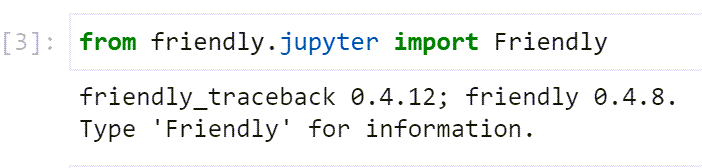
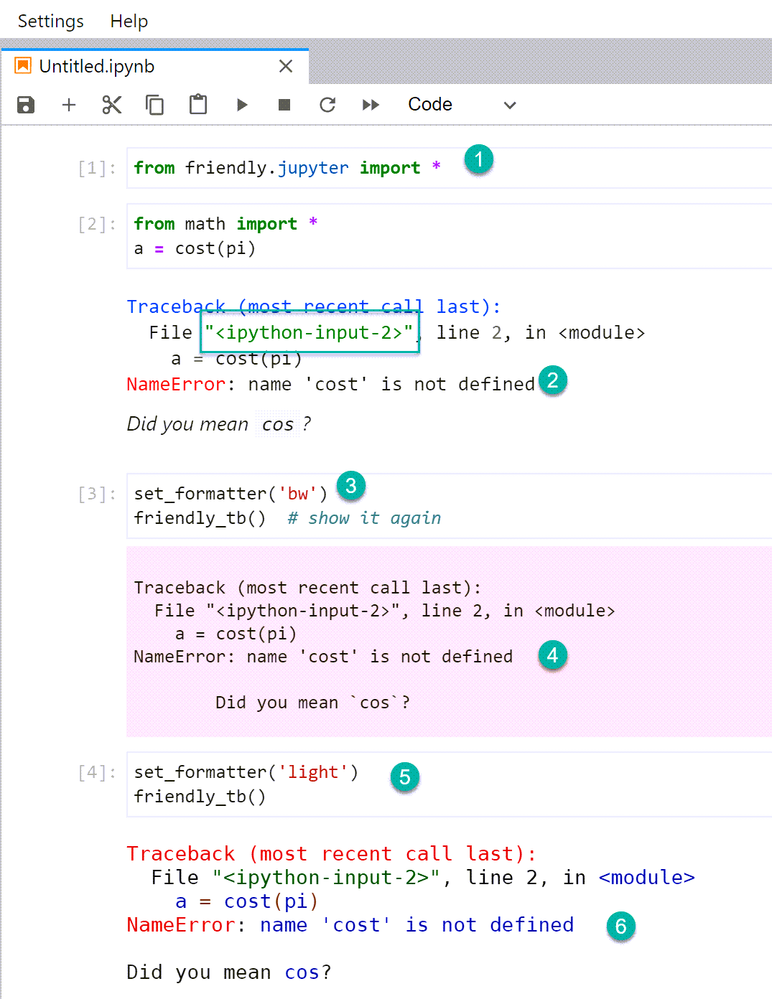

Warning
Most of the documentation was written prior to version 0.5 and needs to be updated. This work has now started for version 0.7 and we aim to have it completed before version 0.8 is available.
Jupyter notebooks and JupyterLab¶
Friendly supports Jupyter notebooks and variants. Note that, other than when I specifically do work to improve friendly’s integration with Jupyter, I do not use Jupyter and may not notice any bugs due to changes in Jupyter and iPython; please feel free to report any issues.
Suggested usage¶
If you are using a Classic notebook, or JupyterLab with a light theme, I suggest that use the following:
from friendly.jupyter import Friendly
This should automatically install friendly.
{kind=link}
If you are using JupyterLab with the dark theme selected, then I suggest the following:
from friendly.jupyter import Friendly
Friendly.dark()
In both these cases, an easy to use interactive mode is selected
where you can have access to the what(), why(), and where()
information when an exception is raised without having to type anything.
Because of this, there is little advantage to use from friendly.jupyter import *
and my use recommendation to do a * import does not apply.
{kind=link}
{kind=link}
Todo
Set width to 60 by default. Add new function to set width of traceback separately, and set that to 100 by default. For iPython, set both to 60. Keep track of tb width so that it is never smaller than general width.
{kind=link}
{kind=link}
Design Choice: automatic installation for Jupyter
Anyone using friendly in a Jupyter environment does so because
they want the traceback information to be processed by friendly.
For this reason, friendly is automatically installed when
friendly.jupyter is imported, instead of requiring users
to call install() after the import statement.
UI Design Choice: buttons instead of function calls for Jupyter
friendly aims to be as easy to use as possible for beginners. Having them clicking on buttons to reveal some additional information when needed is more user-friendly than requiring them to type in and execute some function calls.
Design Choice: only message shown by default for Jupyter
Rather than showing the friendly traceback by default,
only the exception message is shown in addition to the More ...
button.
Available formatters¶
To be added
Normal Jupyter tracebacks.¶
By default, tracebacks in JupyterLab notebooks (or Juypter notebooks) displayed in a browser are given a pink background (1). The image below shows the “old” style of tracebacks.

The “location” of the error (2) includes was of the form
<ipython-input-A-B> where A is the code block number
and B is an internal value (“hash_digest”) of no particular use
to a end user.
Recently, Jupyter (lab/notebooks) have changed the way they operate and use temporary files to store code to be executed; the filenames currently do not have any relation to the code block number.
Friendly’s traceback however indicate clearly what code blocks were involved in the execution leading to a particular traceback.
This hash_digest is removed by friendly as shown below.
{kind=link}
To use friendly, we use a special import statement.
Tracebacks shown by friendly do not have a pink background. Note how the “file” name has been shortened, compared with Jupyter’s default.
The formatter value is changed from the default to
'bw'which is meant to be short for “black and white” meaning that no special colouring is done..This
'bw'choice results in a plain output on pink background.A different syntax colouring (
'light') is also available.The colour scheme with this formatter is fairly similar to the default used for Jupyter notebooks.
After changing to the 'light', I displayed a more complete
content displayed with explain()
{kind=link}
When using from friendly.jupyter import *,
the default formatter is known as 'jupyter'.
{kind=link}
Dark background¶
JupyterLab also gives the choice of a dark background theme. Here’s how the previous example look with this dark theme.

As a last step, I changed the formatter to use the 'dark' option,
which is the default for the friendly console when used in a terminal.
{kind=link}
Finally, here is the result from changing back to the default
'jupyter' formatter.
{kind=link}
For the dark Jupyter theme, some elements, such as numbers and operators,
are very difficult to read.
For this reason, I much prefer using the 'dark' friendly
formatter in this case.
About the hash_digest¶
The hash_digest is meant to uniquely identify the content of a code block. However, this does not appear the case when the same code is entered in different cells for sessions where one uses more than one notebook. I suggested what I believe is a better approach using the kernel number instead of the hash_digest: the combination of the code-block number and kernel number should be unique. However, IPython developers are certainly swamped with issues to consider and would be right not to consider this a high priority item to look at, although it might prevent some messages one occasionally gets about the need to restart a kernel.
Developer’s notes¶
Design Choice: Jupyter font family with Rich
Instead of using the Jupyter default, Rich specifies a set of possible fonts for its output. As a result, the apparent size of the fonts, at least on Windows, appears to be larger when using Rich than without. To avoid this, I override the default from Rich to give a more consistent look and feel.